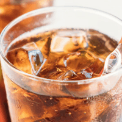
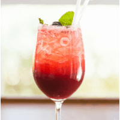
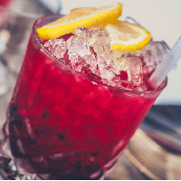
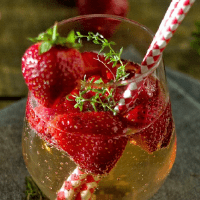

#1. Black Russian
l número uno en nuestra lista lo ocupa el Black russian – el fácil cóctel con vodka que solamente requiere 2 – 3 ingredientes (vodka, Kalhua y coca – cola). Como para preparar a este trago no necesitas coctelera, no hay excusa! Debes de incluirlo en la lista para la fiesta con tus amigos
#2. Tinto De Verano
Este simple trago es una mezcla de vino tinto con Sprite y es muy famoso en España. Gracias a su sabor refrescante, normalmente se lo toma durante los calurosos meses veraniegos
#3. Vodka Cranberry
Como su nombre indica, vodka cranberry lleva básicamente 2 ingredientes principales: vodka y jugo de cranberry que tranquilamente puedes obtener en cualquier supermercado. Si quieres hacer que la bebida se vea más atractiva, te recomiendo añadir mucho hielo picado en el vaso!
#4. Gin Tonic De Frutilla
Gin tonic de futilla no sólo es un trago sencillo para hacer en casa, pero sobre todo delicioso, gracias a las frutillas que completan el dulce sabor del mismo. Ideal para los que buscan una bebida con pocas calorías, ya que el gin tonic es un trago que no engorda! Es cierto 😉 Ahora puedes disfrutar el rico sabor de ginebra y tónica sin preocuparte de subir peso
